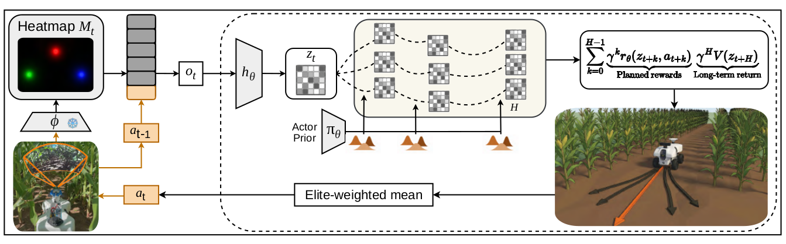
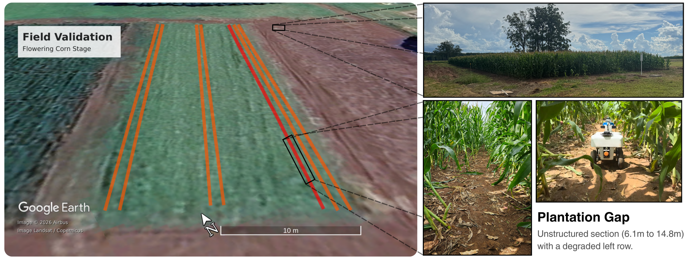

LeCropFollow is a learning-based navigation framework for under-canopy agricultural robots that plans trajectories within a learned latent world model over the uncompressed heatmap signal, enabling zero-shot navigation of unstructured fields without GNSS.
Abstract
Unstructured navigational features, such as irregular planting or discontinuities, remain the primary failure mode for under-canopy agricultural robots. Existing geometric approaches often fail in these scenarios because they compress high-dimensional visual data into deterministic spatial references, effectively discarding the uncertainty and semantic context required to navigate ambiguous terrain. To address this, we present LeCropFollow, a visual navigation framework that bypasses explicit geometric modeling in favor of a learned latent representation. By integrating a self-supervised semantic heatmap extractor with TD-MPC2, a Model-Based Reinforcement Learning (MBRL) planner, our system optimizes trajectories directly within a latent manifold. The framework operates over the uncompressed heatmap signal, preserving the semantic context that geometric reductions discard. We demonstrate that this representational shift enables zero-shot transfer from simplified simulation to the physical world without fine-tuning. Extensive field experiments in late-stage corn fields show that LeCropFollow matches state-of-the-art baselines in unstructured rows but significantly outperforms them in plantation gaps, achieving a 2.4× reduction in semantic failures compared to keypoint-based methods. These results suggest that latent planning offers a robust alternative to geometric estimation for operations in heterogeneous agricultural environments.
Field Demonstrations
System Overview
LeCropFollow maps high-dimensional visual observations directly to control inputs without explicit state estimation. At inference time, the perception backbone (trained via self-supervised learning) and the control policy (trained via model-based reinforcement learning) are deployed zero-shot in the physical field. Rather than assuming explicit geometric priors, our system performs trajectory planning in a learned latent space with a trained world model.

Field Validation

Results
BibTeX
@article{tommaselli2026lecropfollow,
title = {LeCropFollow: Latent Space Planning for Navigation in Unstructured Crop Fields},
author = {Tommaselli, Felipe and Affonso, Francisco and Pompeu, Arthur and Capezzuto, Gianluca and Sivakumar, Arun Narenthiran and Chowdhary, Girish and Becker, Marcelo},
journal = {IEEE Robotics and Automation Letters},
year = {2026},
note = {Accepted for publication},
eprint = {2606.31941},
archivePrefix = {arXiv},
primaryClass = {cs.RO}
}